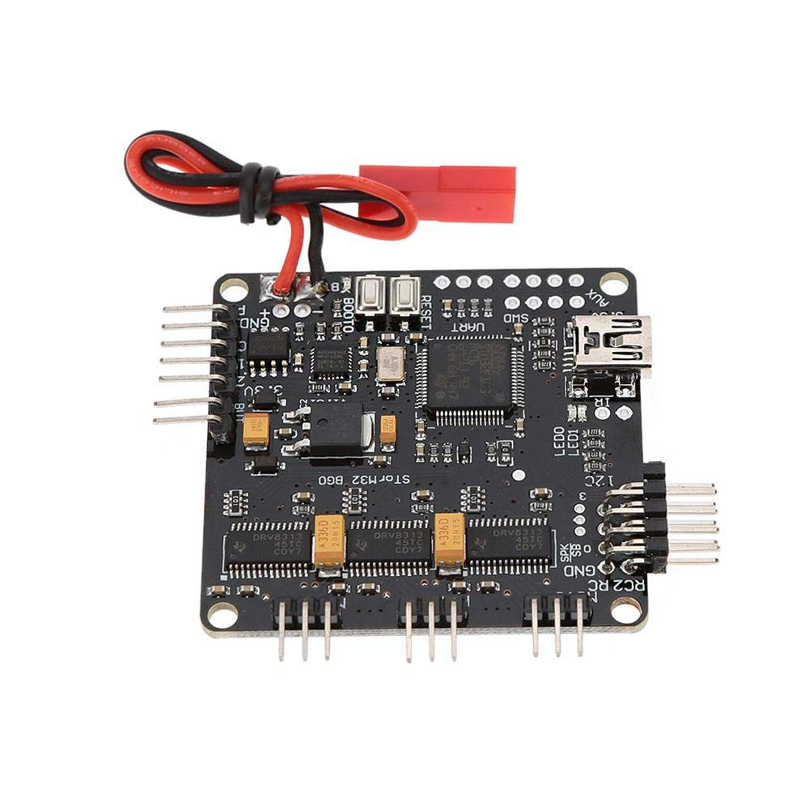
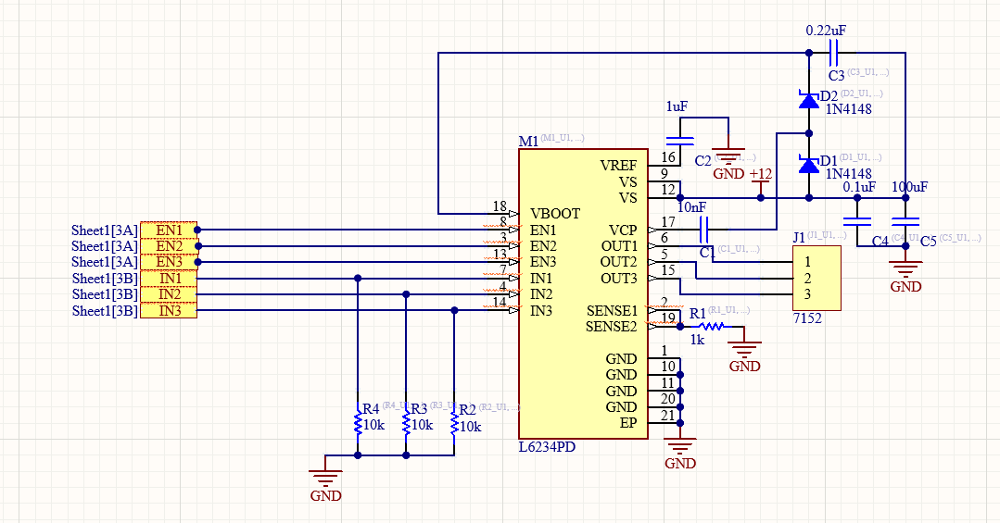
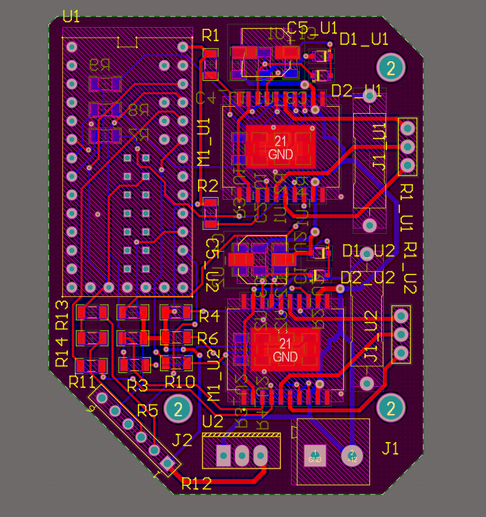
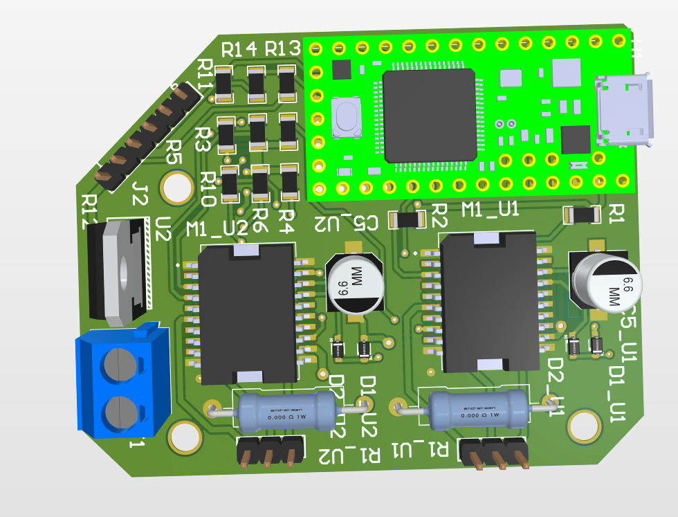
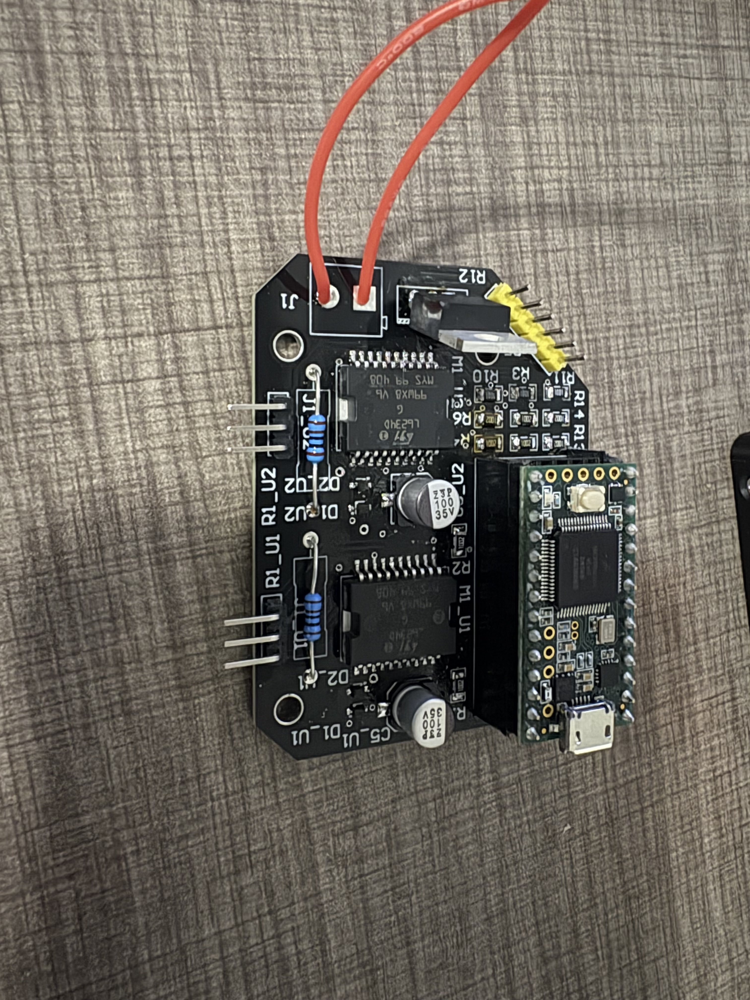
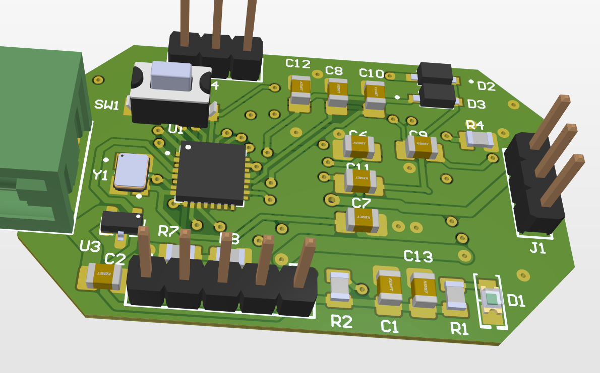
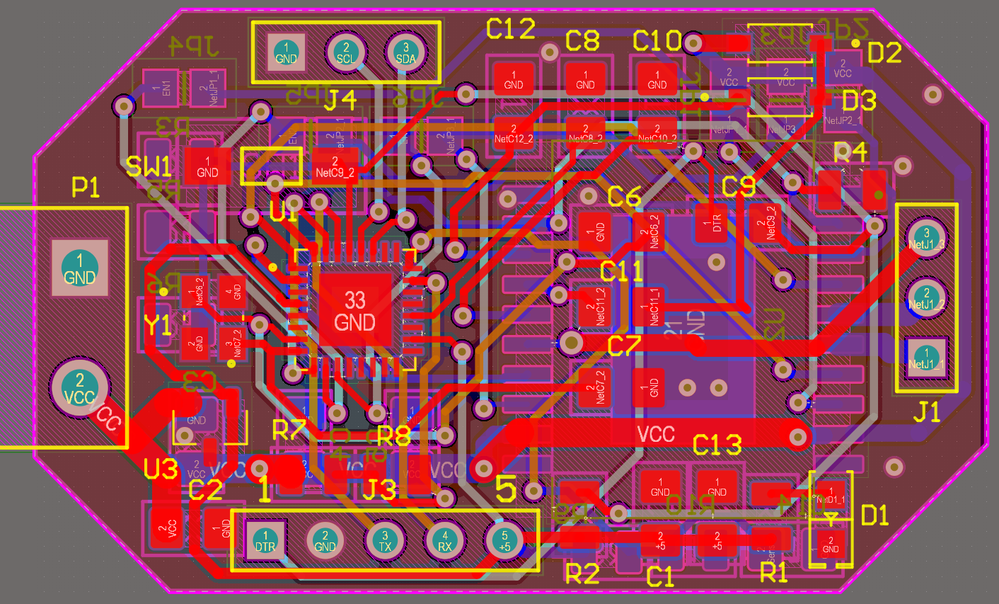

I started this project to address a need I found in small UAV prototyping. When I was designing drones for my robotics team and for my personal projects I really wanted to make a completely custom optics and sensor gimbal. I knew that smooth stabilization was a great advantage of these gimbals, similar to those seen on DJI camera drones, and that it was best achieved using brushless motors for their smooth rotation and rapid control response. With the right software and hardware brushelss motor control can overcome the vibrational, precision, and backlash issues faced when utilizing servos or DC motors. I tried looking for off the shelf solutions for which I found very few. There were expensive and large controllers such as ODrive and Moteus, but those were meant for driving large brushless motors on robots, utilizing very high currents, something I could not justify on my drone. Then there were dedicated gimbal controllers, supposedly the perfect solution, and the one I bought was the STorM32 board, which had 3 channel outputs and built in accelerometers. I was very excited to use it, but I kept running into software issues, especially with calibration. Additionally, because I purchased mine off ebay, the build quality wasn't great and it nearly melted a plastic mount due to a short from faulty connection that I had to fix. I eventually got tired of what felt like wasting my time and I decided to built something myself. A compact, low-cost brushless motor controller meant for gimbals that was very simple to integrate into existing UAV architectures.

I began by researching the principles of brushless control and existing designs. Luckily the STorM32 as well as the ODrive and Moteus boards are all open source so I was able to learn a lot by studying their schematics. I additionally found some great YouTube videos on people who made similar projects on brushless control. The first board I designed for this was to test out the L6234 motor driver chip, using a Teensy in order to generate the necessary control signals. Following the datasheet I made the schematic for the chip and designed the board to be fabricated by JLCPCB.



Assembling and testing the board proved to be more difficult, as we didn't have a reflow oven at the Studio, which meant I had to hand solder each of the SMD components. Initially I got promising test results, but unfortunately, before I could proceed with more tests, I accidentally shorted my power supply cable through the microcontroller, destroying my only Teensy board. I resolved that the best way to go forward would be to take the success I had, and continue to move forward as best I could to shrink the board, integrating a microcontroller directly on the PCB and adding more protections.

My newest iteration of the board utilizes an ATMega328PD microcontroller chip as well as the L6234 on a double sided PCB for maximum compactness. The schematic was based on work from ElectroNoobs on YouTube who had some success in sensorless slow brushless control. I am currently awaiting the boards and I'm excited to assemble and test so that I can finally have a completely custom method for controlling my drone gimbals.

